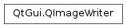

QImageWriter¶
Synopsis¶
Functions¶
- def
canWrite() - def
compression() - def
description() - def
device() - def
error() - def
errorString() - def
fileName() - def
format() - def
gamma() - def
optimizedWrite() - def
progressiveScanWrite() - def
quality() - def
setCompression(compression) - def
setDescription(description) - def
setDevice(device) - def
setFileName(fileName) - def
setFormat(format) - def
setGamma(gamma) - def
setOptimizedWrite(optimize) - def
setProgressiveScanWrite(progressive) - def
setQuality(quality) - def
setSubType(type) - def
setText(key, text) - def
setTransformation(orientation) - def
subType() - def
supportedSubTypes() - def
supportsOption(option) - def
transformation() - def
write(image)
Static functions¶
- def
supportedImageFormats() - def
supportedMimeTypes()
Detailed Description¶
The
PySide2.QtGui.QImageWriterclass provides a format independent interface for writing images to files or other devices.
PySide2.QtGui.QImageWritersupports setting format specific options, such as the gamma level, compression level and quality, prior to storing the image. If you do not need such options, you can useQImage.save()orQPixmap.save()instead.To store an image, you start by constructing a
PySide2.QtGui.QImageWriterobject. Pass either a file name or a device pointer, and the image format toPySide2.QtGui.QImageWriter‘s constructor. You can then set several options, such as the gamma level (by callingPySide2.QtGui.QImageWriter.setGamma()) and quality (by callingPySide2.QtGui.QImageWriter.setQuality()).PySide2.QtGui.QImageWriter.canWrite()returnstrueifPySide2.QtGui.QImageWritercan write the image (i.e., the image format is supported and the device is open for writing). CallPySide2.QtGui.QImageWriter.write()to write the image to the device.If any error occurs when writing the image,
PySide2.QtGui.QImageWriter.write()will return false. You can then callPySide2.QtGui.QImageWriter.error()to find the type of error that occurred, orPySide2.QtGui.QImageWriter.errorString()to get a human readable description of what went wrong.Call
PySide2.QtGui.QImageWriter.supportedImageFormats()for a list of formats thatPySide2.QtGui.QImageWritercan write.PySide2.QtGui.QImageWritersupports all built-in image formats, in addition to any image format plugins that support writing.See also
PySide2.QtGui.QImageReaderPySide2.QtGui.QImageIOHandlerQImageIOPlugin
-
class
PySide2.QtGui.QImageWriter¶ -
class
PySide2.QtGui.QImageWriter(device, format) -
class
PySide2.QtGui.QImageWriter(fileName[, format=QByteArray()]) Parameters: - format –
PySide2.QtCore.QByteArray - device –
PySide2.QtCore.QIODevice - fileName – unicode
Constructs an empty
PySide2.QtGui.QImageWriterobject. Before writing, you must callPySide2.QtGui.QImageWriter.setFormat()to set an image format, thenPySide2.QtGui.QImageWriter.setDevice()orPySide2.QtGui.QImageWriter.setFileName().Constructs a
PySide2.QtGui.QImageWriterobject using the devicedeviceand image formatformat.Constructs a
PySide2.QtGui.QImageWriterobjects that will write to a file with the namefileName, using the image formatformat. Ifformatis not provided,PySide2.QtGui.QImageWriterwill detect the image format by inspecting the extension offileName.- format –
-
PySide2.QtGui.QImageWriter.ImageWriterError¶ This enum describes errors that can occur when writing images with
PySide2.QtGui.QImageWriter.Constant Description QImageWriter.DeviceError PySide2.QtGui.QImageWriterencountered a device error when writing the image data. Consult your device for more details on what went wrong.QImageWriter.UnsupportedFormatError Qt does not support the requested image format. QImageWriter.InvalidImageError An attempt was made to write an invalid PySide2.QtGui.QImage. An example of an invalid image would be a nullPySide2.QtGui.QImage.QImageWriter.UnknownError An unknown error occurred. If you get this value after calling PySide2.QtGui.QImageWriter.write(), it is most likely caused by a bug inPySide2.QtGui.QImageWriter.
-
PySide2.QtGui.QImageWriter.canWrite()¶ Return type: PySide2.QtCore.boolReturns
trueifPySide2.QtGui.QImageWritercan write the image; i.e., the image format is supported and the assigned device is open for reading.
-
PySide2.QtGui.QImageWriter.compression()¶ Return type: PySide2.QtCore.intReturns the compression of the image.
-
PySide2.QtGui.QImageWriter.description()¶ Return type: unicode Use
QImageReader.text()instead.Returns the description of the image.
-
PySide2.QtGui.QImageWriter.device()¶ Return type: PySide2.QtCore.QIODeviceReturns the device currently assigned to
PySide2.QtGui.QImageWriter, or 0 if no device has been assigned.
-
PySide2.QtGui.QImageWriter.error()¶ Return type: PySide2.QtGui.QImageWriter.ImageWriterErrorReturns the type of error that last occurred.
See also
QImageWriter.ImageWriterErrorPySide2.QtGui.QImageWriter.errorString()
-
PySide2.QtGui.QImageWriter.errorString()¶ Return type: unicode Returns a human readable description of the last error that occurred.
See also
-
PySide2.QtGui.QImageWriter.fileName()¶ Return type: unicode If the currently assigned device is a
PySide2.QtCore.QFile, or ifPySide2.QtGui.QImageWriter.setFileName()has been called, this function returns the name of the filePySide2.QtGui.QImageWriterwrites to. Otherwise (i.e., if no device has been assigned or the device is not aPySide2.QtCore.QFile), an emptyPySide2.QtCore.QStringis returned.
-
PySide2.QtGui.QImageWriter.format()¶ Return type: PySide2.QtCore.QByteArrayReturns the format
PySide2.QtGui.QImageWriteruses for writing images.
-
PySide2.QtGui.QImageWriter.gamma()¶ Return type: PySide2.QtCore.floatReturns the gamma level of the image.
-
PySide2.QtGui.QImageWriter.optimizedWrite()¶ Return type: PySide2.QtCore.boolReturns whether optimization has been turned on for writing the image.
-
PySide2.QtGui.QImageWriter.progressiveScanWrite()¶ Return type: PySide2.QtCore.boolReturns whether the image should be written as a progressive image.
-
PySide2.QtGui.QImageWriter.quality()¶ Return type: PySide2.QtCore.intReturns the quality setting of the image format.
-
PySide2.QtGui.QImageWriter.setCompression(compression)¶ Parameters: compression – PySide2.QtCore.intThis is an image format specific function that set the compression of an image. For image formats that do not support setting the compression, this value is ignored.
The value range of
compressiondepends on the image format. For example, the “tiff” format supports two values, 0(no compression) and 1(LZW-compression).
-
PySide2.QtGui.QImageWriter.setDescription(description)¶ Parameters: description – unicode Use
PySide2.QtGui.QImageWriter.setText()instead.This is an image format specific function that sets the description of the image to
description. For image formats that do not support setting the description, this value is ignored.The contents of
descriptiondepends on the image format.
-
PySide2.QtGui.QImageWriter.setDevice(device)¶ Parameters: device – PySide2.QtCore.QIODeviceSets
PySide2.QtGui.QImageWriter‘s device todevice. If a device has already been set, the old device is removed fromPySide2.QtGui.QImageWriterand is otherwise left unchanged.If the device is not already open,
PySide2.QtGui.QImageWriterwill attempt to open the device inQIODevice.WriteOnlymode by calling open(). Note that this does not work for certain devices, such asPySide2.QtCore.QProcess,PySide2.QtNetwork.QTcpSocketandPySide2.QtNetwork.QUdpSocket, where more logic is required to open the device.
-
PySide2.QtGui.QImageWriter.setFileName(fileName)¶ Parameters: fileName – unicode Sets the file name of
PySide2.QtGui.QImageWritertofileName. Internally,PySide2.QtGui.QImageWriterwill create aPySide2.QtCore.QFileand open it inQIODevice.WriteOnlymode, and use this file when writing images.
-
PySide2.QtGui.QImageWriter.setFormat(format)¶ Parameters: format – PySide2.QtCore.QByteArraySets the format
PySide2.QtGui.QImageWriterwill use when writing images, toformat.formatis a case insensitive text string. Example:writer = QImageWriter() writer.setFormat("png") # same as writer.setFormat("PNG")
You can call
PySide2.QtGui.QImageWriter.supportedImageFormats()for the full list of formatsPySide2.QtGui.QImageWritersupports.See also
-
PySide2.QtGui.QImageWriter.setGamma(gamma)¶ Parameters: gamma – PySide2.QtCore.floatThis is an image format specific function that sets the gamma level of the image to
gamma. For image formats that do not support setting the gamma level, this value is ignored.The value range of
gammadepends on the image format. For example, the “png” format supports a gamma range from 0.0 to 1.0.
-
PySide2.QtGui.QImageWriter.setOptimizedWrite(optimize)¶ Parameters: optimize – PySide2.QtCore.boolThis is an image format-specific function which sets the
optimizeflags when writing images. For image formats that do not support setting anoptimizeflag, this value is ignored.The default is false.
-
PySide2.QtGui.QImageWriter.setProgressiveScanWrite(progressive)¶ Parameters: progressive – PySide2.QtCore.boolThis is an image format-specific function which turns on
progressivescanning when writing images. For image formats that do not support setting aprogressivescan flag, this value is ignored.The default is false.
-
PySide2.QtGui.QImageWriter.setQuality(quality)¶ Parameters: quality – PySide2.QtCore.intSets the quality setting of the image format to
quality.Some image formats, in particular lossy ones, entail a tradeoff between a) visual quality of the resulting image, and b) encoding execution time and compression level. This function sets the level of that tradeoff for image formats that support it. For other formats, this value is ignored.
The value range of
qualitydepends on the image format. For example, the “jpeg” format supports a quality range from 0 (low visual quality, high compression) to 100 (high visual quality, low compression).See also
-
PySide2.QtGui.QImageWriter.setSubType(type)¶ Parameters: type – PySide2.QtCore.QByteArrayThis is an image format specific function that sets the subtype of the image to
type. Subtype can be used by a handler to determine which format it should use while saving the image.For example, saving an image in DDS format with A8R8G8R8 subtype:
QImageWriter writer("some/image.dds"); if (writer.supportsOption(QImageIOHandler::SubType)) writer.setSubType("A8R8G8B8"); writer.write(image);
See also
-
PySide2.QtGui.QImageWriter.setText(key, text)¶ Parameters: - key – unicode
- text – unicode
Sets the image text associated with the key
keytotext. This is useful for storing copyright information or other information about the image. Example:image = QImage("some/image.jpeg") writer = QImageWriter("images/outimage.png", "png") writer.setText("Author", "John Smith") writer.write(image)
If you want to store a single block of data (e.g., a comment), you can pass an empty key, or use a generic key like “Description”.
The key and text will be embedded into the image data after calling
PySide2.QtGui.QImageWriter.write().Support for this option is implemented through
QImageIOHandler.Description.See also
-
PySide2.QtGui.QImageWriter.setTransformation(orientation)¶ Parameters: orientation – PySide2.QtGui.QImageIOHandler.TransformationsSets the image transformations metadata including orientation to
transform.If transformation metadata is not supported by the image format, the transform is applied before writing.
-
PySide2.QtGui.QImageWriter.subType()¶ Return type: PySide2.QtCore.QByteArrayReturns the subtype of the image.
-
static
PySide2.QtGui.QImageWriter.supportedImageFormats()¶ Return type: Returns the list of image formats supported by
PySide2.QtGui.QImageWriter.By default, Qt can write the following formats:
Format MIME type Description BMP image/bmp Windows Bitmap JPG image/jpeg Joint Photographic Experts Group PNG image/png Portable Network Graphics PBM image/x-portable-bitmap Portable Bitmap PGM image/x-portable-graymap Portable Graymap PPM image/x-portable-pixmap Portable Pixmap XBM image/x-xbitmap X11 Bitmap XPM image/x-xpixmap X11 Pixmap Reading and writing SVG files is supported through the Qt SVG module. The Qt Image Formats module provides support for additional image formats.
Note that the
PySide2.QtWidgets.QApplicationinstance must be created before this function is called.See also
PySide2.QtGui.QImageWriter.setFormat()QImageReader.supportedImageFormats()QImageIOPlugin
-
static
PySide2.QtGui.QImageWriter.supportedMimeTypes()¶ Return type: Returns the list of MIME types supported by
PySide2.QtGui.QImageWriter.Note that the
PySide2.QtWidgets.QApplicationinstance must be created before this function is called.
-
PySide2.QtGui.QImageWriter.supportedSubTypes()¶ Return type: Returns the list of subtypes supported by an image.
-
PySide2.QtGui.QImageWriter.supportsOption(option)¶ Parameters: option – PySide2.QtGui.QImageIOHandler.ImageOptionReturn type: PySide2.QtCore.boolReturns
trueif the writer supportsoption; otherwise returns false.Different image formats support different options. Call this function to determine whether a certain option is supported by the current format. For example, the PNG format allows you to embed text into the image’s metadata (see text()).
writer = QImageWriter(fileName) if writer.supportsOption(QImageIOHandler.Description): writer.setText("Author", "John Smith")
Options can be tested after the writer has been associated with a format.
-
PySide2.QtGui.QImageWriter.transformation()¶ Return type: PySide2.QtGui.QImageIOHandler.TransformationsReturns the transformation and orientation the image has been set to written with.
-
PySide2.QtGui.QImageWriter.write(image)¶ Parameters: image – PySide2.QtGui.QImageReturn type: PySide2.QtCore.boolWrites the image
imageto the assigned device or file name. Returnstrueon success; otherwise returnsfalse. If the operation fails, you can callPySide2.QtGui.QImageWriter.error()to find the type of error that occurred, orPySide2.QtGui.QImageWriter.errorString()to get a human readable description of the error.
© 2018 The Qt Company Ltd. Documentation contributions included herein are the copyrights of their respective owners. The documentation provided herein is licensed under the terms of the GNU Free Documentation License version 1.3 as published by the Free Software Foundation. Qt and respective logos are trademarks of The Qt Company Ltd. in Finland and/or other countries worldwide. All other trademarks are property of their respective owners.